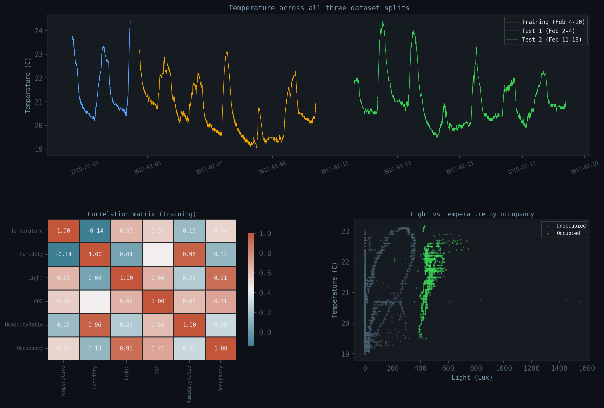
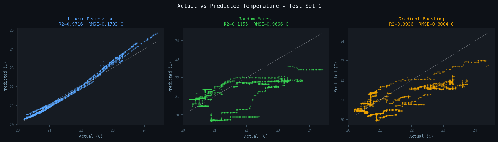
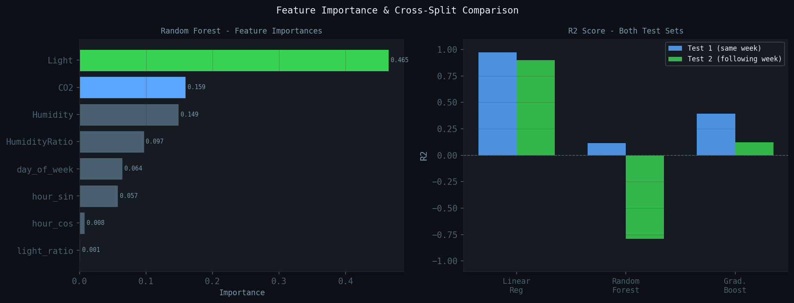

Three regression models trained on real DHT11, LDR, and CO2 data. One clear winner. One surprising result.
Cheap IoT sensors like the DHT11 drift, saturate, and give noisy readings. This project asks: can we cross-validate what one sensor reports against what the others suggest it should be?
Three regression models learn the relationship between humidity, light, CO2, and time-of-day and the room temperature. Trained on one week of real office sensor data, then tested on two separate time windows to see how well the learned patterns hold up.
Temperature, light, and CO2 all rise together when the room is occupied. Humidity moves inversely with temperature — the physical relationship is real and consistent across the dataset.

Evaluated on two separate time windows. Test1 is from the same week as training (pre-training dates). Test2 is the following week — a completely fresh thermal environment.
| Model | Test1 R² | Test1 RMSE | Test2 R² | Test2 RMSE |
|---|---|---|---|---|
| Linear Regression best | 0.9716 | 0.1733 °C | 0.8981 | 0.3258 °C |
| Gradient Boosting | 0.3936 | 0.8004 °C | 0.1215 | 0.9566 °C |
| Random Forest | 0.1155 | 0.9666 °C | -0.7905 | 1.3657 °C |
Random Forest achieves R² = -0.79 on Test2. A negative R² means the model predicts worse than just guessing the training mean every time. It memorized the thermal fingerprint of one specific week and could not generalize when the heating pattern shifted slightly the following week. This is distribution shift — one of the most common failure modes in real IoT deployments.

Light intensity is the dominant predictor of temperature — more than humidity or CO2. That sounds backwards until you realize what Light is actually encoding: occupancy. Lights on means people in the room, and people generate heat.
The LDR reading is doing double duty as an indirect body-heat sensor.

Download the UCI dataset files, install dependencies, run the script. The code is intentionally short — under 90 lines including comments.
# 1. Clone the repo
git clone https://github.com/sobanmujtaba/IoT-Environmental-Predictor
cd IoT-Environmental-Predictor
# 2. Install dependencies
pip install scikit-learn pandas numpy matplotlib
# 3. Download the dataset (place alongside predict.py)
# https://archive.ics.uci.edu/dataset/357/occupancy+detection
# Files: datatraining.txt datatest.txt datatest2.txt
# 4. Run
python predict.py